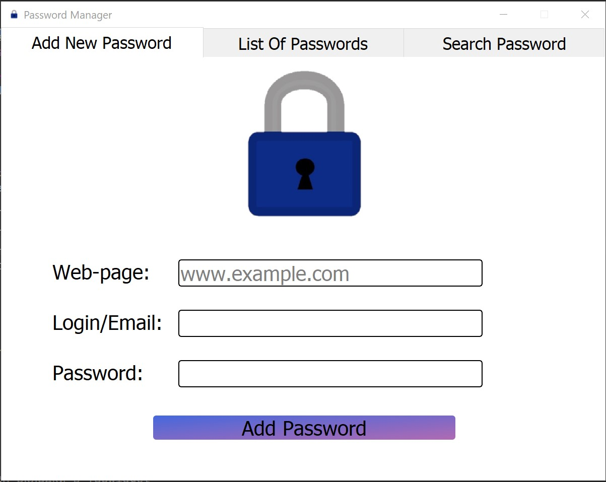
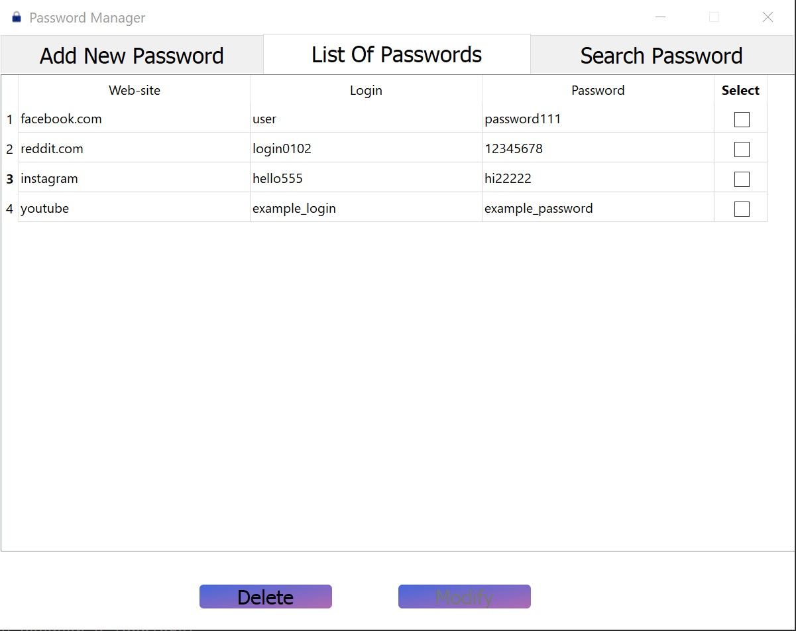
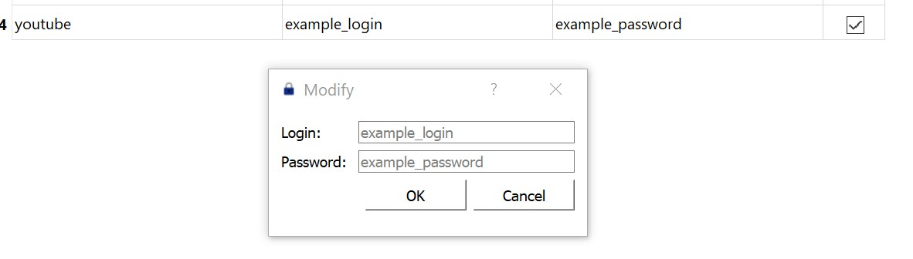
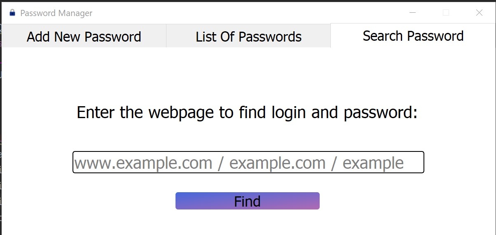
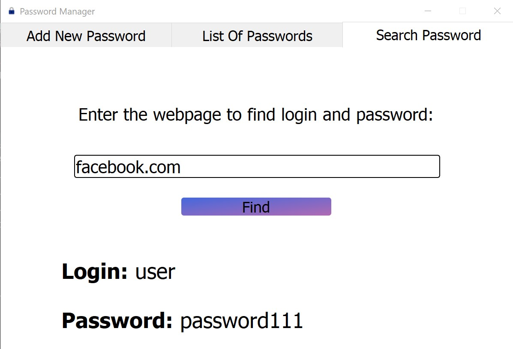

The application allows to add passwords to different websites, see them all in a list, modify/delete them, and
also to find password and login to a necessary website.

All information is stored in a JSON file.

Changing the stored password/login to youtube


This desktop app was made just for training and doesn`t have any additional protection (at least YET), but
using this application is more convenient, than storing all passwords in a .txt file.